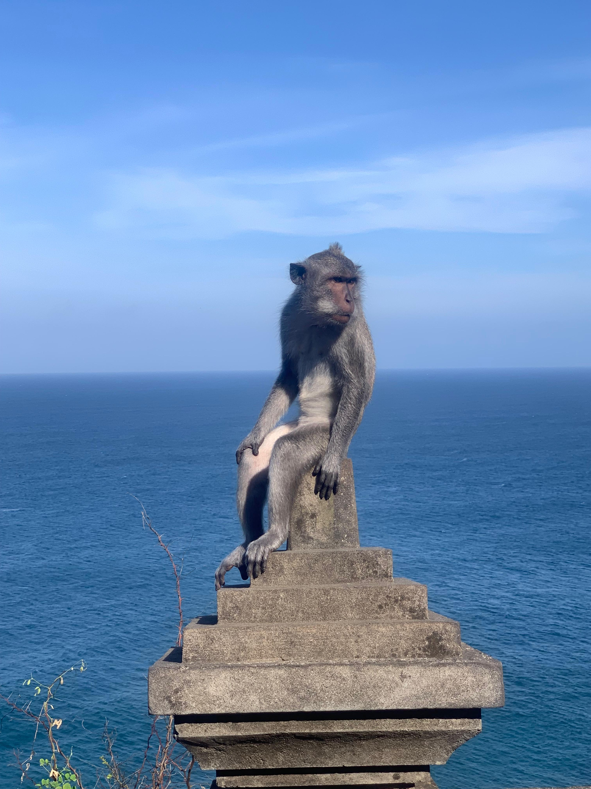
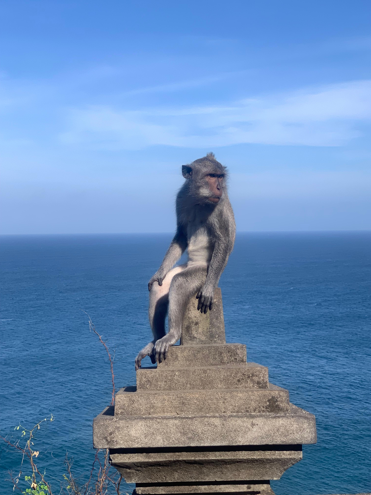
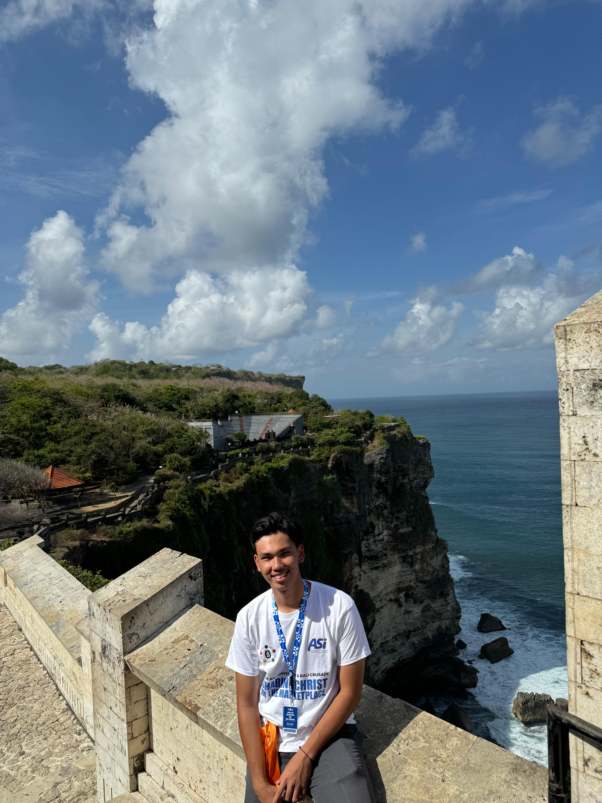
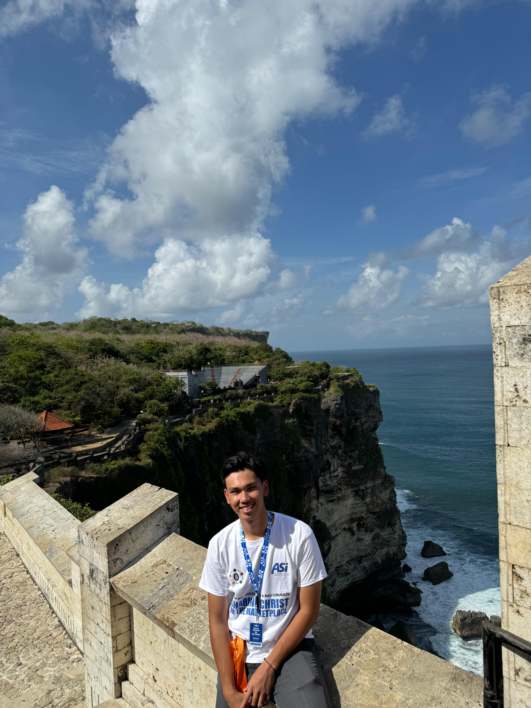

 


During my vacation, I went to Bali for a church event. It was my first time going to Bali by land, and the trip took 1 full day or 24 hours. We also had to transit using a ferry, which took around 45 minutes. Once we arrived, we were greeted by the beautiful scenery of Kuta Beach with its stunning waves. There were many tourists visiting Bali, and the weather was very hot, perfect for sunbathing on the beach. We stayed in Bali for 4 days. The food in Bali was delicious and spicy. The traffic there was also quite heavy, just like in Jakarta
Jangan di follow @nuelrmb